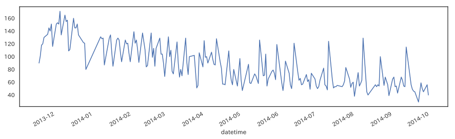
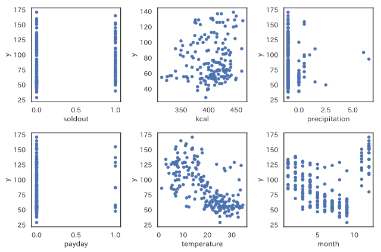
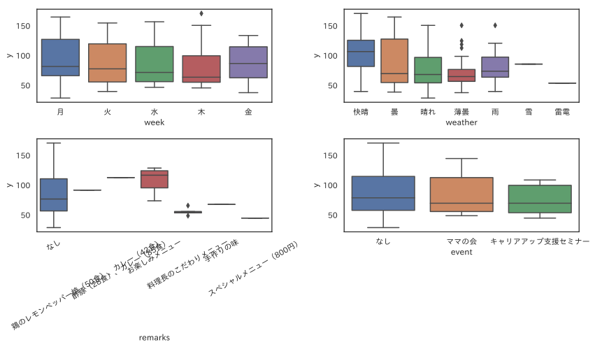
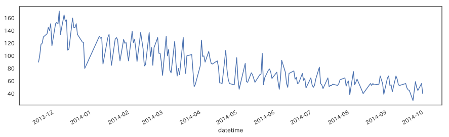
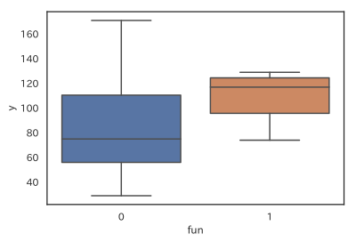
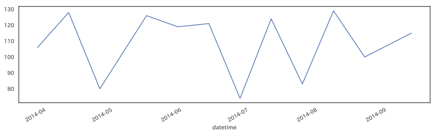
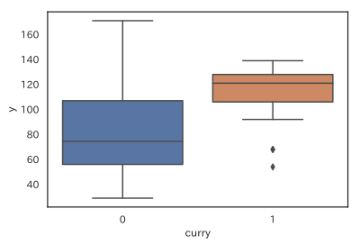
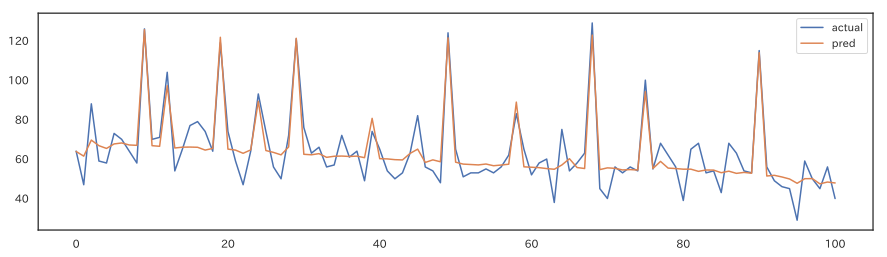
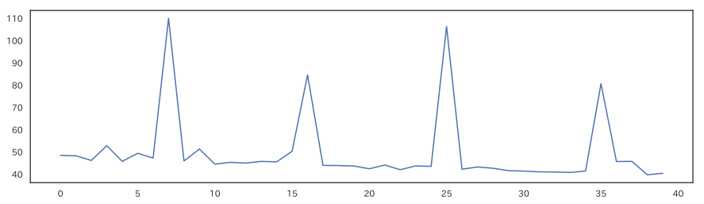

1. お弁当の需要予測チュートリアル¶
1.1. Introduction¶
[1]:
import japanize_matplotlib
import pandas as pd
import numpy as np
from matplotlib import pyplot as plt
import seaborn as sns
sns.set(font="IPAexGothic",style="white")
[2]:
train = pd.read_csv("./original/train.csv")
test = pd.read_csv("./original/test.csv")
sample = pd.read_csv("./original/sample.csv",header=None)
print("Data Shapes")
print("Train:",train.shape, "Test:",test.shape, "Sample:",sample.shape)
Data Shapes
Train: (207, 12) Test: (40, 11) Sample: (40, 2)
[3]:
train.index = pd.to_datetime(train["datetime"])
train.head()
[3]:
| datetime | y | week | soldout | name | kcal | remarks | event | payday | weather | precipitation | temperature | |
|---|---|---|---|---|---|---|---|---|---|---|---|---|
| datetime | ||||||||||||
| 2013-11-18 | 2013-11-18 | 90 | 月 | 0 | 厚切りイカフライ | NaN | NaN | NaN | NaN | 快晴 | -- | 19.8 |
| 2013-11-19 | 2013-11-19 | 101 | 火 | 1 | 手作りヒレカツ | NaN | NaN | NaN | NaN | 快晴 | -- | 17.0 |
| 2013-11-20 | 2013-11-20 | 118 | 水 | 0 | 白身魚唐揚げ野菜あん | NaN | NaN | NaN | NaN | 快晴 | -- | 15.5 |
| 2013-11-21 | 2013-11-21 | 120 | 木 | 1 | 若鶏ピリ辛焼 | NaN | NaN | NaN | NaN | 快晴 | -- | 15.2 |
| 2013-11-22 | 2013-11-22 | 130 | 金 | 1 | ビッグメンチカツ | NaN | NaN | NaN | NaN | 快晴 | -- | 16.1 |
[4]:
train.describe()
[4]:
| y | soldout | kcal | payday | temperature | |
|---|---|---|---|---|---|
| count | 207.000000 | 207.000000 | 166.000000 | 10.0 | 207.000000 |
| mean | 86.623188 | 0.449275 | 404.409639 | 1.0 | 19.252174 |
| std | 32.882448 | 0.498626 | 29.884641 | 0.0 | 8.611365 |
| min | 29.000000 | 0.000000 | 315.000000 | 1.0 | 1.200000 |
| 25% | 57.000000 | 0.000000 | 386.000000 | 1.0 | 11.550000 |
| 50% | 78.000000 | 0.000000 | 408.500000 | 1.0 | 19.800000 |
| 75% | 113.000000 | 1.000000 | 426.000000 | 1.0 | 26.100000 |
| max | 171.000000 | 1.000000 | 462.000000 | 1.0 | 34.600000 |
[5]:
train.describe(include="O")
[5]:
| datetime | week | name | remarks | event | weather | precipitation | |
|---|---|---|---|---|---|---|---|
| count | 207 | 207 | 207 | 21 | 14 | 207 | 207 |
| unique | 207 | 5 | 156 | 6 | 2 | 7 | 8 |
| top | 2014-8-19 | 木 | タンドリーチキン | お楽しみメニュー | ママの会 | 曇 | -- |
| freq | 1 | 43 | 6 | 12 | 9 | 53 | 169 |
[7]:
train["payday"] = train["payday"].fillna(0)
train["precipitation"] = train["precipitation"].apply(lambda x: -1 if x == "--" else float(x))
train["event"] = train["event"].fillna("なし")
train["remarks"] = train["remarks"].fillna("なし")
train["month"] = train["datetime"].apply(lambda x: int(x.split("-")[1]))
train[['payday','precipitation','event','month','payday']][0:5]
[7]:
| payday | precipitation | event | month | payday | |
|---|---|---|---|---|---|
| datetime | |||||
| 2013-11-18 | 0.0 | -1.0 | なし | 11 | 0.0 |
| 2013-11-19 | 0.0 | -1.0 | なし | 11 | 0.0 |
| 2013-11-20 | 0.0 | -1.0 | なし | 11 | 0.0 |
| 2013-11-21 | 0.0 | -1.0 | なし | 11 | 0.0 |
| 2013-11-22 | 0.0 | -1.0 | なし | 11 | 0.0 |
[6]:
train["y"].plot(figsize=(15,4))
[6]:
<matplotlib.axes._subplots.AxesSubplot at 0x127366a58>

[8]:
fig, ax = plt.subplots(2,3,figsize=(9,6))
train.plot.scatter(x="soldout",y="y",ax=ax[0][0])
train.plot.scatter(x="kcal",y="y",ax=ax[0][1])
train.plot.scatter(x="precipitation",y="y",ax=ax[0][2])
train.plot.scatter(x="payday",y="y",ax=ax[1][0])
train.plot.scatter(x="temperature",y="y",ax=ax[1][1])
train.plot.scatter(x="month",y="y",ax=ax[1][2])
plt.tight_layout()
'c' argument looks like a single numeric RGB or RGBA sequence, which should be avoided as value-mapping will have precedence in case its length matches with 'x' & 'y'. Please use a 2-D array with a single row if you really want to specify the same RGB or RGBA value for all points.
'c' argument looks like a single numeric RGB or RGBA sequence, which should be avoided as value-mapping will have precedence in case its length matches with 'x' & 'y'. Please use a 2-D array with a single row if you really want to specify the same RGB or RGBA value for all points.
'c' argument looks like a single numeric RGB or RGBA sequence, which should be avoided as value-mapping will have precedence in case its length matches with 'x' & 'y'. Please use a 2-D array with a single row if you really want to specify the same RGB or RGBA value for all points.
'c' argument looks like a single numeric RGB or RGBA sequence, which should be avoided as value-mapping will have precedence in case its length matches with 'x' & 'y'. Please use a 2-D array with a single row if you really want to specify the same RGB or RGBA value for all points.
'c' argument looks like a single numeric RGB or RGBA sequence, which should be avoided as value-mapping will have precedence in case its length matches with 'x' & 'y'. Please use a 2-D array with a single row if you really want to specify the same RGB or RGBA value for all points.
'c' argument looks like a single numeric RGB or RGBA sequence, which should be avoided as value-mapping will have precedence in case its length matches with 'x' & 'y'. Please use a 2-D array with a single row if you really want to specify the same RGB or RGBA value for all points.

[9]:
fig,ax = plt.subplots(2,2,figsize=(12,7))
sns.boxplot(x="week",y="y",data=train,ax=ax[0][0])
sns.boxplot(x="weather",y="y",data=train,ax=ax[0][1])
sns.boxplot(x="remarks",y="y",data=train,ax=ax[1][0])
ax[1][0].set_xticklabels(ax[1][0].get_xticklabels(),rotation=30)
sns.boxplot(x="event",y="y",data=train,ax=ax[1][1])
plt.tight_layout()

[10]:
train[train["remarks"]!="お楽しみメニュー"]["y"].plot(figsize=(15,4))
[10]:
<matplotlib.axes._subplots.AxesSubplot at 0x129937ef0>

[11]:
train["fun"] = train["remarks"].apply(lambda x: 1 if x=="お楽しみメニュー" else 0)
sns.boxplot(x="fun",y="y",data=train)
[11]:
<matplotlib.axes._subplots.AxesSubplot at 0x1299aad68>

[12]:
from scipy.stats import median_test
stat,p,med,tbl = median_test(train[train["fun"]==1]["y"],train[train["fun"]==0]["y"])
print("p",p,"stat",stat)
p 0.007057960766247775 stat 7.2581589841730345
[13]:
train[train["remarks"]=="お楽しみメニュー"]["y"].plot(figsize=(15,4))
[13]:
<matplotlib.axes._subplots.AxesSubplot at 0x129a07438>

[14]:
train[train["remarks"]=="お楽しみメニュー"]
[14]:
| datetime | y | week | soldout | name | kcal | remarks | event | payday | weather | precipitation | temperature | month | fun | |
|---|---|---|---|---|---|---|---|---|---|---|---|---|---|---|
| datetime | ||||||||||||||
| 2014-03-28 | 2014-3-28 | 106 | 金 | 0 | キーマカレー | NaN | お楽しみメニュー | なし | 0.0 | 快晴 | -1.0 | 18.5 | 3 | 1 |
| 2014-04-11 | 2014-4-11 | 128 | 金 | 1 | チキンカレー | NaN | お楽しみメニュー | なし | 0.0 | 快晴 | -1.0 | 16.5 | 4 | 1 |
| 2014-04-25 | 2014-4-25 | 80 | 金 | 0 | 中華丼 | NaN | お楽しみメニュー | なし | 0.0 | 晴れ | -1.0 | 20.8 | 4 | 1 |
| 2014-05-16 | 2014-5-16 | 126 | 金 | 0 | ポークカレー | NaN | お楽しみメニュー | ママの会 | 0.0 | 快晴 | -1.0 | 23.8 | 5 | 1 |
| 2014-05-30 | 2014-5-30 | 119 | 金 | 0 | チキンカレー | NaN | お楽しみメニュー | なし | 0.0 | 薄曇 | -1.0 | 26.9 | 5 | 1 |
| 2014-06-13 | 2014-6-13 | 121 | 金 | 0 | キーマカレー | NaN | お楽しみメニュー | なし | 0.0 | 晴れ | -1.0 | 29.5 | 6 | 1 |
| 2014-06-27 | 2014-6-27 | 74 | 金 | 0 | 牛丼 | NaN | お楽しみメニュー | なし | 0.0 | 雨 | 0.0 | 25.4 | 6 | 1 |
| 2014-07-11 | 2014-7-11 | 124 | 金 | 0 | ポークカレー | NaN | お楽しみメニュー | なし | 0.0 | 晴れ | -1.0 | 33.9 | 7 | 1 |
| 2014-07-25 | 2014-7-25 | 83 | 金 | 0 | ひやしたぬきうどん・炊き込みご飯 | NaN | お楽しみメニュー | なし | 0.0 | 晴れ | -1.0 | 33.6 | 7 | 1 |
| 2014-08-08 | 2014-8-8 | 129 | 金 | 0 | チキンカレー | NaN | お楽しみメニュー | なし | 1.0 | 曇 | -1.0 | 31.1 | 8 | 1 |
| 2014-08-22 | 2014-8-22 | 100 | 金 | 1 | ロコモコ丼 | NaN | お楽しみメニュー | なし | 0.0 | 晴れ | -1.0 | 33.1 | 8 | 1 |
| 2014-09-12 | 2014-9-12 | 115 | 金 | 0 | ポークカレー | NaN | お楽しみメニュー | なし | 0.0 | 晴れ | -1.0 | 27.3 | 9 | 1 |
[15]:
train["curry"] = train["name"].apply(lambda x: 1 if x.find("カレー")>=0 else 0)
sns.boxplot(x="curry",y="y",data=train)
[15]:
<matplotlib.axes._subplots.AxesSubplot at 0x1299edf28>

[16]:
stat,p,med,tbl = median_test(train[train["curry"]==1]["y"],train[train["curry"]==0]["y"])
print("p:",p,"stat",stat)
p: 0.010699742900892427 stat 6.514516162828877
1.2. Method¶
[17]:
train = pd.read_csv("./original/train.csv")
test = pd.read_csv("./original/test.csv")
sample = pd.read_csv("./original/sample.csv",header=None)
[ ]:
train["t"] = 1
test["t"] = 0
dat = pd.concat([train,test],sort=True).reset_index(drop=True)
[18]:
dat.head()
---------------------------------------------------------------------------
NameError Traceback (most recent call last)
<ipython-input-18-60061f00c0d7> in <module>()
----> 1 dat.head()
NameError: name 'dat' is not defined
[ ]:
dat.index = pd.to_datetime(dat["datetime"])
dat = dat["2014-05-01":]
dat = dat.reset_index(drop=True)
dat["days"] = dat.index
dat["precipitation"] = dat["precipitation"].apply(lambda x : -1 if x=="--" else x).astype(np.float)
dat["fun"] = dat["remarks"].apply(lambda x: 1 if x=="お楽しみメニュー" else 0)
dat["curry"] = dat["name"].apply(lambda x : 1 if x.find("カレー")>=0 else 0)
cols = ["precipitation","weather","days","fun","curry","y"]
[ ]:
from sklearn.model_selection import KFold
from sklearn.metrics import mean_squared_error as MSE
from sklearn.linear_model import LinearRegression as LR
from sklearn.ensemble import RandomForestRegressor as RF
[ ]:
def learning(trainX,y_train):
model1 = LR()
model2 = RF(n_estimators=100,max_depth=4,random_state=777)
model1.fit(trainX["days"].values.reshape(-1,1),y_train)
pred = model1.predict(trainX["days"].values.reshape(-1,1))
pred_sub = y_train - pred
model2.fit(trainX.iloc[:,~trainX.columns.str.match("y")],pred_sub)
return model1,model2
1.3. Evaluation¶
[ ]:
kf = KFold(n_splits=5,random_state=777)
tr = dat[dat["t"]==1][cols]
trains = []
tests = []
for train_index, test_index in kf.split(tr):
tr.loc[train_index,"tt"] = 1
tr.loc[test_index,"tt"] = 0
tr["tt"] = tr["tt"].astype(np.int)
tmp = pd.get_dummies(tr)
trainX = tmp[tmp["tt"]==1]
del trainX["tt"]
testX = tmp[tmp["tt"]==0]
del testX["tt"]
y_train = tmp[tmp["tt"]==1]["y"]
y_test = tmp[tmp["tt"]==0]["y"]
model1,model2 = learning(trainX,y_train)
pred_train = model1.predict(trainX["days"].values.reshape(-1,1)) + model2.predict(trainX.iloc[:,~trainX.columns.str.match("y")])
pred_test = model1.predict(testX["days"].values.reshape(-1,1)) + model2.predict(testX.iloc[:,~testX.columns.str.match("y")])
print("TRAIN:",MSE(y_train,pred_train)**0.5,"VARIDATE",MSE(y_test,pred_test)**0.5)
trains.append(MSE(y_train,pred_train)**0.5)
tests.append(MSE(y_test,pred_test)**0.5)
print("AVG")
print(np.array(trains).mean(),np.array(tests).mean())
[25]:
cols = ["precipitation","weather","days","fun","curry","y","t"]
tmp = pd.get_dummies(dat[cols])
trainX = tmp[tmp["t"]==1]
del trainX["t"]
testX = tmp[tmp["t"]==0]
del testX["t"]
y_train = tmp[tmp["t"]==1]["y"]
y_test = tmp[tmp["t"]==0]["y"]
[26]:
model1,model2 = learning(trainX,y_train)
pred = model1.predict(trainX["days"].values.reshape(-1,1)) + model2.predict(trainX.iloc[:,~trainX.columns.str.match("y")])
p = pd.DataFrame({"actual":y_train,"pred":pred})
p.plot(figsize=(15,4))
print("RMSE",MSE(y_train,pred)**0.5)
RMSE 7.986229908417227

[28]:
model1,model2 = learning(trainX,y_train)
pred = model1.predict(testX["days"].values.reshape(-1,1)) + model2.predict(testX.iloc[:,~testX.columns.str.match("y")])
plt.figure(figsize=(15,4))
plt.plot(pred)
[28]:
[<matplotlib.lines.Line2D at 0x12a866668>]

[29]:
sample[1] = pred
sample.to_csv("submit01.csv",index=None,header=None)